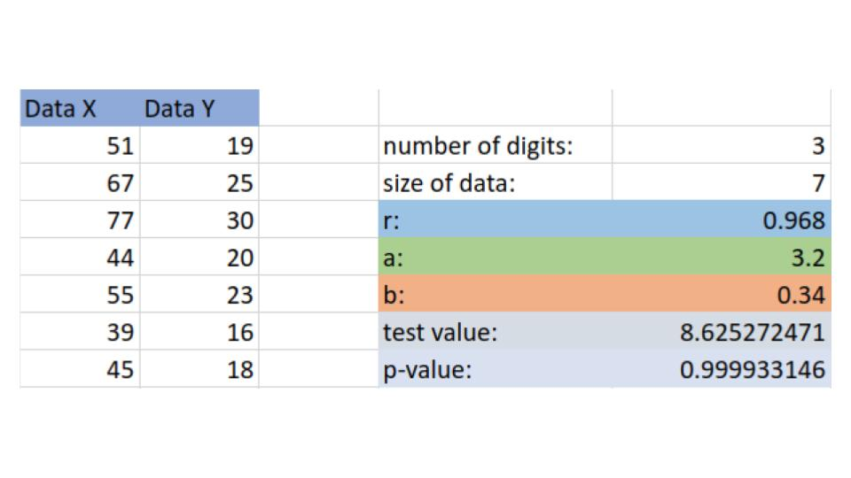

Calculating
Regression Lines
Example
The following data shows the number of hits and the number of at bats for 7 major league players in recent World Series. If there is enough evidence to suggest a strong linear relationship between at bats and hits, with a significance of 0.05, then predict the number of hits expected if a player gets 80 at bats.
| At Bats | 51 | 67 | 77 | 44 | 55 | 39 | 45 |
| Hits | 19 | 25 | 30 | 20 | 23 | 16 | 18 |
Step 1:
Enter Data into calculator

We see that we have a p-value of 0.9999, this is greater that \(1-\frac{\alpha}{2}\) thus we reject the null hypothesis of \(\rho=0\) and hence we conclude that this sample suggests that it is likely that this data is linearly correlated.
Step 2:
Since we concluded that this data is linearly correlated we look back at our calculator and see that
\[a=3.2\]
\[b=0.34\]
So this means that we can approximate our data with the line
\[y=0.34x+3.2\]
Step 4:
To approximate the number of hits likely if a player gets 80 at bats, we replace the \(x\) in the above equation to get
\[\text{number of hits }=y=0.34\cdot(80)+3.2=30.4\]
So we should expect around 30.4 hits if we give a player 80 at bats.